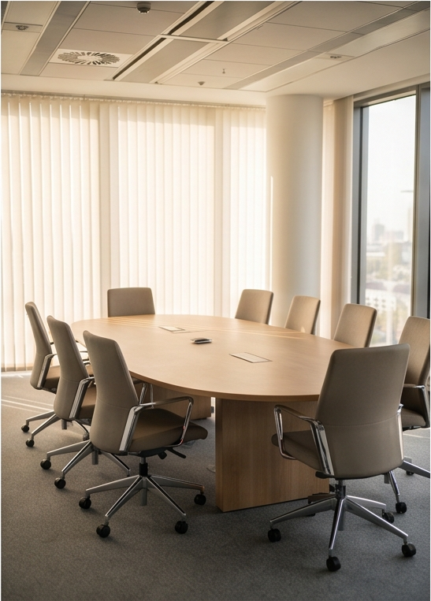

Sektor finansowy



Dla właścicieli i zarządów firm 60+ osób
Więcej ludzi, więcej zleceń, więcej przychodu — i coraz więcej spraw, które przechodzą przez Ciebie. Procesy, które działały przy 30 osobach, przy 80 zaczynają się sypać. Porządkujemy organizację tak, żeby rosła bez chaosu i bez Ciebie w każdej decyzji.

Zanim zaczniemy zmieniać
Decyzje na podstawie przeczuć, bo aktualnych danych nie ma pod ręką. Problemy, które wychodzą na jaw za późno. Działy, które nie rozmawiają ze sobą. Zaczynamy od diagnozy — pokazujemy, gdzie tracisz czas, pieniądze i kontrolę, zanim zaproponujemy jakąkolwiek zmianę.
Umów diagnozęObjaw
Firma rośnie… a chaos razem z nią?
Objaw
Masz dane… czy tylko Excela pełnego chaosu?
Objaw
Pracownicy powielają tę samą pracę w 3 działach, a spotkania przeciągają się w nieskończoność
Objaw
Co naprawdę nagradza Twój system premiowy?
Objaw
Rosnące koszty operacyjne bez jasnej przyczyny
Z czym najczęściej do nas przychodzicie
Jak pracujemy
Nie wdrażamy gotowych schematów. Każdy etap realizujemy z myślą o Twojej organizacji, jej tempie i realnych celach biznesowych.
Rozmowa z ekspertem
Zaczynamy od rozmowy o Twojej firmie — jej sytuacji, wyzwaniach i oczekiwaniach. Wspólnie określamy cele biznesowe i sprawdzamy, jakie działania będą najskuteczniejsze. Rozumiemy nie tylko problem, ale i kontekst oraz kierunek rozwoju.
Efekt etapu
Plan działania i dobór narzędzi
Na podstawie diagnozy przygotowujemy indywidualny plan działania. Dobieramy metody, narzędzia i zakres wsparcia pod założone cele. Każde rozwiązanie dostosowujemy do specyfiki firmy, jej możliwości i etapu rozwoju.
Efekt etapu
Mapowanie sytuacji w firmie
Przyglądamy się firmie całościowo: procesom, strukturze, komunikacji, rolom, zasobom, kulturze i bieżącym wyzwaniom. Nie szukamy wyłącznie problemów — wskazujemy też mocne strony i potencjał, na którym można budować dalszy rozwój.
Efekt etapu
Realizacja i wdrożenie
Przechodzimy do realizacji i wspieramy organizację na każdym etapie wdrożenia. Monitorujemy postępy, reagujemy na wyzwania i dbamy o realną wartość. Tworzymy rozwiązania, które działają również w przyszłości.
Efekt etapu
Nasze podejście
Skuteczne wsparcie biznesu wymaga spojrzenia na firmę jako całość. Każdy etap realizujemy z uwzględnieniem wszystkich aspektów działania — od strategii, procesów i struktury, przez ludzi i komunikację, aż po kulturę organizacyjną i bieżące wyzwania rynkowe.
Jednocześnie respektujemy indywidualne tempo rozwoju organizacji. Dzięki temu rozwiązania są nie tylko skuteczne, ale też możliwe do wdrożenia i trwałego utrzymania w codziennym funkcjonowaniu firmy.